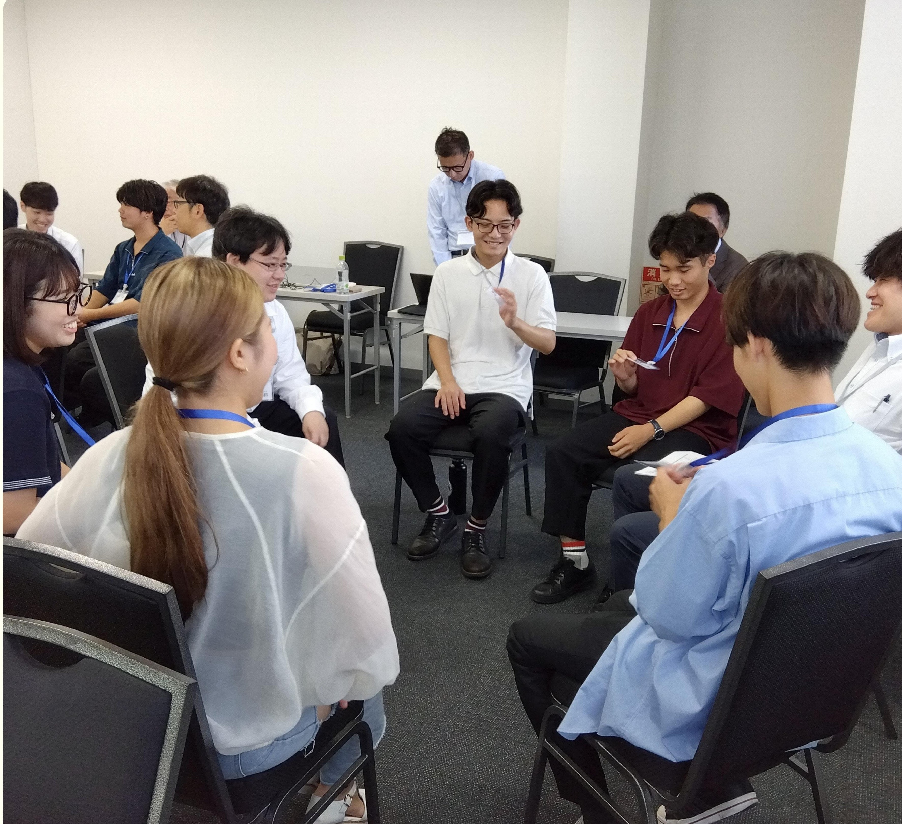
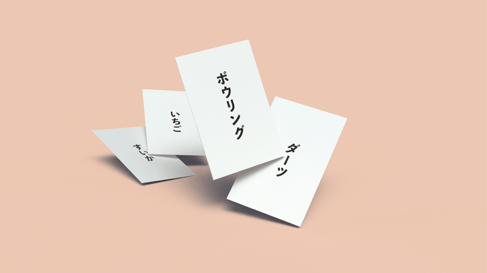
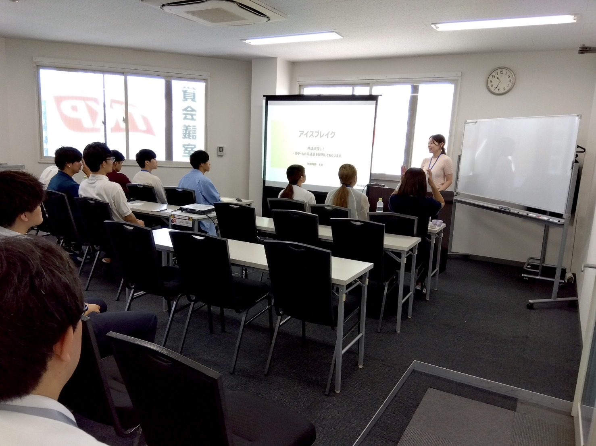
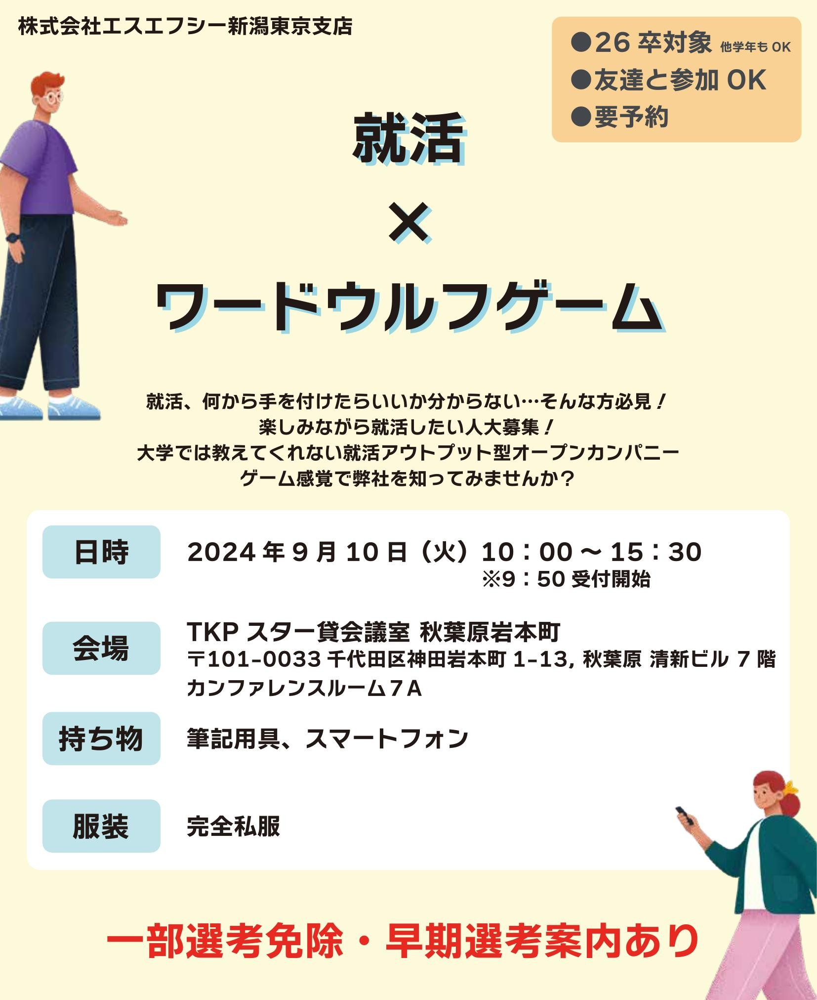
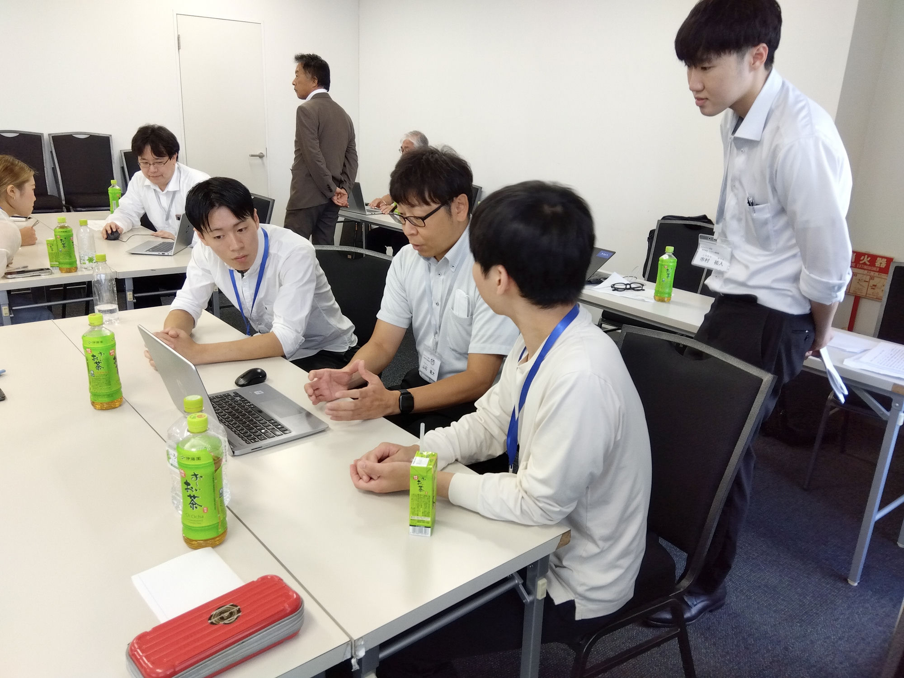
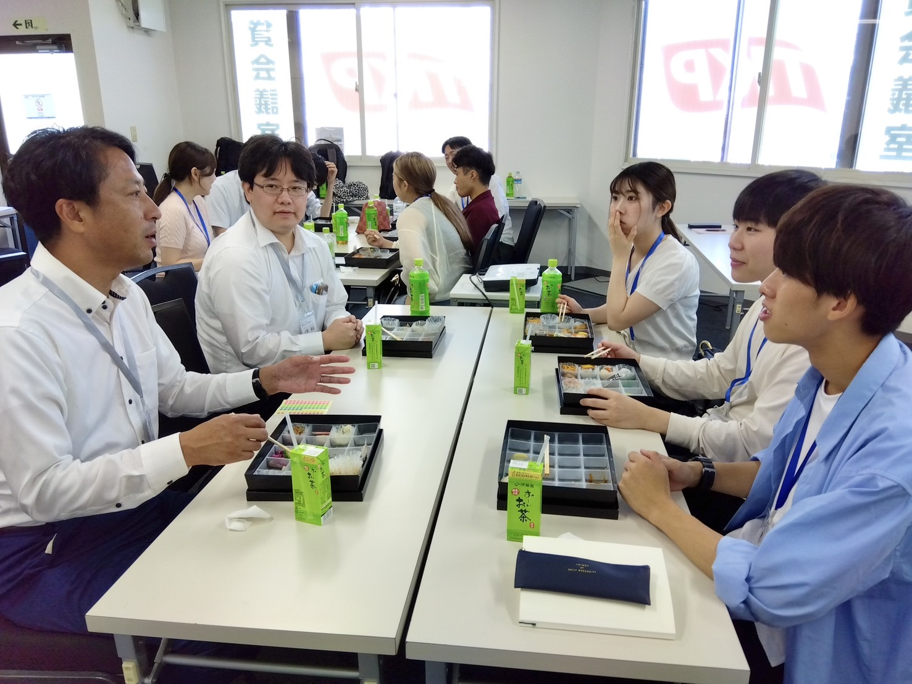
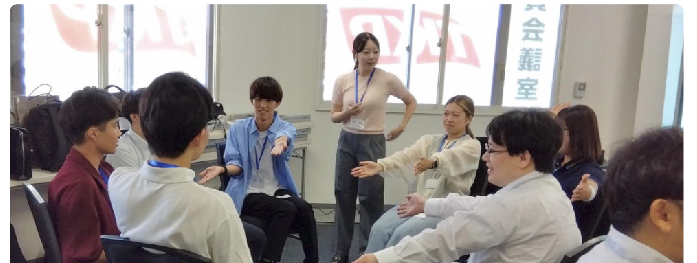

ゲームで企業文化を可視化
企業ブランディングをデザイン

01Overview — ゲームを介して、企業文化を伝える
新卒採用に苦戦する企業から依頼を受け、学生の視点でオープンカンパニーを企画・実施しました。 「ワードウルフ」というゲームを介して、社員と学生が対等な立場で言葉を交わす場をつくることで、 資料だけでは伝わらない社員の人柄や企業文化を可視化することを目指しました。
02Project Info
- ツール
- 形態
- 業務委託(株式会社エスエフシー新潟)
- 時期
- 学部3年
- 期間
- 6カ月(2024.03〜09)
- 人数
- 1人+社員の方々
03Background — 制作の背景
株式会社エスエフシー新潟東京支店の新卒採用難を背景に、学生の視点でオープンカンパニーを企画・実施してほしいと依頼を受ける。
学生の会社への理解を深めることを目的としたオープンカンパニーを企画・実施
「ワードウルフ」を介して、企業と学生の間に新たなコミュニケーションを生み出した。
↓
社員の多様な個性と企業文化を可視化することで、学生の会社への共感を深め、魅力的な企業ブランドの構築と入社意欲向上に貢献した。
04Research & Plan — なぜワードウルフなのか
社員と学生の双方にリサーチを行い、それぞれの需要を把握。 企業は「意欲のある、優秀な学生を採用したい」、学生は「業務内容や働きやすさを知りたい」というすれ違いが見えてきました。
企画 — ワードウルフ
社員と学生のコミュニケーションデザインとして「ワードウルフ」というゲームを選びました。 このゲームは、簡単なルールの中で参加者全員が平等に意見交換できる場を創出し、企業文化を可視化する効果があります。 ゲームを通して社員の多様な個性に触れることができる点が、学生の企業イメージをポジティブに変化させることに繋がると考えました。

05Execution — 当日の実施
当日は司会・進行を担当。会場の雰囲気を見て声かけをしたり、登壇する前の社員の方に改めて確認を取るなど、 スムーズな運営を心がけました。またゲームのルール説明や進行サポートを行い、参加者全員が楽しめるよう工夫を凝らした点が、 この企画の成功に繋がりました。




06Result — 得られた成果
12名中、9名の学生が次回の座談会を希望するなど、当初の目的を達成することができました。 特に、社長から「社員の新しい一面が見れた」との評価をいただき、企画の有効性を確認しました。 参加者全員が楽しめたという点も、大きな成果と言えるでしょう。
参加 → 次回の座談会を希望
12名 → 9名
